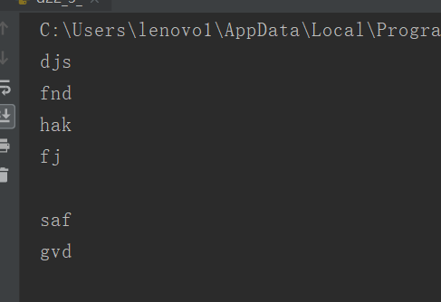
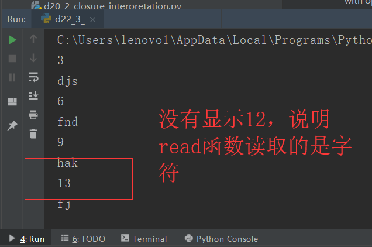
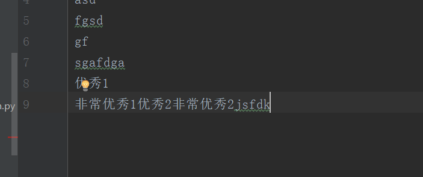
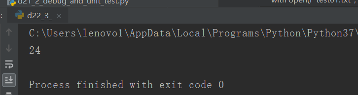

原文出处:本文由博客园博主心悦君兮君不知-睿提供。
原文连接:https://www.cnblogs.com/ruigege0000/p/11235367.html
原文连接:https://www.cnblogs.com/ruigege0000/p/11235367.html
一、
1.连续打印举例
#打开文件，三个字符一组读出来内容，然后显示在屏幕上，每读一次，停一秒
import time
with open(r"test01.txt",'r') as f:
strChar = f.read(3)
while strChar:
print(strChar)
time.sleep(1)
strChar = f.read(3)

2.tell函数
（1）用法：用来显示文件读写指针的当前位置
（2）格式：文件.tell()
（3）举例：
with open(r"test01.txt",'r') as f:
strChar2 = f.read(3)
pos = f.tell()
while strChar2:
print(pos)
print(strChar2)
strChar2 = f.read(3)
pos = f.tell()

（4）注意：上面的例子说明了：tell返回数字的单位是byte；read是以字符为单位的
3.文件的写操作 --函数write与writeline
（1）用法：
write(str):把字符串写入文件
writeline(str):把字符串按行写入文件
（2）格式：
文件.write(str)
文件.writelines(str)
（3）区别：
i.write函数参数只能是字符串
ii.writeline函数参数可以是字符串，也可以是字符串序列
with open(r"test01.txt",'a') as l:
l.write("优秀1 \n非常优秀1")
b = ["优秀2","非常优秀2","jsfdk"]
l.writelines(b)

二、持久化 --模块pickle
1.（1）序列化（持久化、落地）：把程序运行中的信息保存在磁盘上
（2）反序列化：序列化+的逆过程
2.函数dump&load
（1）用法：
dump序列化
load反序列化
（2）格式：
pickle.dump(被存文件，存储到的文件)
pickle.load（读取的文件）
（3）例子：
import pickle
with open(r"test01.txt","wb") as k:
age = 24
pickle.dump(age,k)
with open(r"test01.txt","rb") as j:
age=pickle.load(j)
print(age)
三、源码
d17_5_datetime_package
地址：https://github.com/ruigege66/Python_learning/blob/master/d17_5_datetime_package
2.CSDN：https://blog.csdn.net/weixin_44630050（心悦君兮君不知-睿）
3.博客园：https://www.cnblogs.com/ruigege0000/
4.欢迎关注微信公众号：傅里叶变换